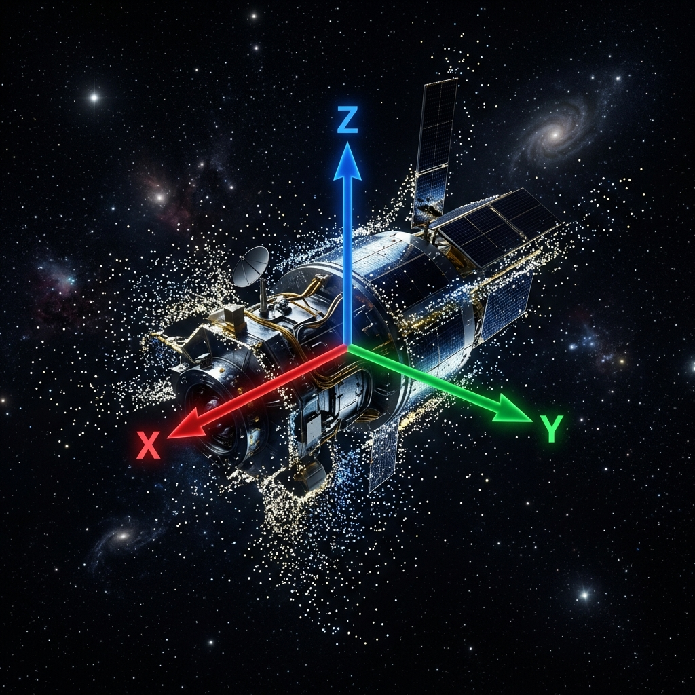

CV-RL Autonomous Drone Pipeline (Isaac Sim + OmniDrones)
Developed a Teleop → Behaviour Cloning → PPO fine-tuning pipeline for autonomous quadrotor navigation with obstacle avoidance in NVIDIA Isaac Sim.

Project Overview
This project explores a progressive training pipeline for autonomous quadrotor navigation. Starting from human teleoperation demonstrations, the system bootstraps a behaviour cloning policy, then refines it using Proximal Policy Optimization (PPO) reinforcement learning in a physics-accurate simulation environment.
Pipeline Architecture
Stage 1: Teleoperation
A human operator flies the quadrotor through obstacle-rich environments, collecting expert demonstration trajectories that capture obstacle avoidance strategies and efficient navigation paths.
Stage 2: Behaviour Cloning
The collected demonstrations are used to train an initial policy via supervised imitation learning. This provides a warm-start policy that already exhibits basic navigation competence.
Stage 3: PPO Fine-Tuning
The behaviour-cloned policy is further refined using PPO in the simulation environment. The RL phase enables the agent to:
- Discover novel strategies beyond the demonstration distribution
- Optimize for long-horizon objectives (e.g., minimizing flight time)
- Generalize to unseen obstacle configurations
Custom Gymnasium Environment
Built a custom Gymnasium-compatible environment within NVIDIA Isaac Sim + OmniDrones featuring:
- Collision detection with termination on contact
- Obstacle randomization for domain randomization during training
- Expert-demonstration capture from teleoperation sessions
- Training diagnostics including reward curves and episode statistics
Skills & Technologies
Python, PyTorch, Stable-Baselines3, Gymnasium, PPO, Behaviour Cloning, NVIDIA Isaac Sim, OmniDrones, Reinforcement Learning